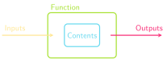

Jed Rembold & Fred Agbo
September 11, 2023
What is the printed value of A in the
code below?
>>> A = 10
>>> B = 5 % 3
>>> C = A * B ** B
>>> A -= B + A // 2
>>> A, B, C = C, A, B
>>> print(A)
??'I am a string'"I am also a string!""I'm sad you've gone"
The general form of a function definition looks like:
def name(parameter_list):
#statements in function bodyname is your chosen
name for the functionparameter_list is
a comma-separated list of variable names that will hold
each input valueYou can return or output a value from the function by including a return statement in the function body
return expressionexpression is the value
you want to return or outputreturn statement
is included, Python will by default return
None
Convert Fahrenheit temperatures to their Celsius equivalent
def f_to_c(f):
return 5 / 9 * (f - 32)Using the function:
print(f_to_c(45))Computes the volume of a cylinder of height
h and radius
r
def cylinder_volume(r, h):
return 3.14159 * r**2 * hUsing the function:
print(cylinder_volume(2,10))| Function | Description |
|---|---|
abs(x) |
The absolute value of x |
max(x,y,...) |
The largest of all the arguments |
min(x,y,...) |
The smallest of all the arguments |
round(x) |
The value of x rounded to the nearest integer |
int(x) |
The value of x truncated to an integer |
float(x) |
The value of x as a decimal |
.py. Such files are called
modules.printprint() command will display whatever is
between the () to the screenSeparate each thing by a comma inside the
print statement. This will insert a space
between each when printed.
print(1,2,'blue')Concatenate what you want together with
+, converting to strings as needed
python print('2000' + ' - ' + '2023')
print(str(1) + ' ' + str(2) + ' blue')Python defines two types of operators that work with Boolean data: relational operators and logical operators
Relational operators compare values of other types and produce a
True/False
result:
== |
Equals | != |
Not equals | |||
< |
Less than | <= |
Less than or equal too | |||
> |
Greater than | >= |
Greater than or equal to |
Be careful! == compares two
booleans. A single = assigns a
variable. The odds are high you’ll use one when you meant the other at
least once this semester!
Logical operators act on Boolean pairings
| Operator | Description |
|---|---|
A and B |
True if both terms True, False otherwise |
A or B |
True if any term is True, False otherwise |
not A |
True if A False, False if A True (opposite) |
or is
still True if both options are
Truenot with and and
or
not A or BWhat value is printed when the code to the right runs?
TrueFalse"4Quiz"A = 10
B = 4
C = "Quiz"
A *= B
if A > 40 and C != "C":
print(str(B)+C)
else:
print(A < B or not (C == "C"))
Example: if n=0, then the
x % n == 0 is never actually checked in the
statement
n != 0 and x % n == 0since n != 0 already is
False and
False and anything is always
False
x % n == 0 statement would have erred out if
n=0inputTo retrieve data from a user, we can use Python’s built-in
input() function
The form will generally look like:
variable = input(prompt_text)variable is the variable name you want
to assign the user’s typed input toprompt_text is the string that will be
displayed on the screen to communicate to the user what they should be
doingThe input() function always
returns a string
If you want to get an integer from the user, you will need to convert it yourself after retrieving it
num = int(input('Pick a number between 1 and 10: '))Python programs specify what part of the code is supposed to be executed when a program is run using a few special lines at the end of the program
if __name__ == '__main__':
function_to_run()function_to_run is the name of whatever
function you want to execute when the program is run directlyPatterns of this sort are commonly called boilerplate
NUM_ODDS = 100 # Constant, so using all caps
def print_odds():
"""
Prints the first NUM_ODDS odd numbers
starting at 1.
"""
value = 1
for i in range(NUM_ODDS):
print(value)
value += 2
if __name__ == '__main__':
print_odds()finished = False
while not finished:
line = input("Enter a number: ")
if line == "":
finished = True
else:
print(line)